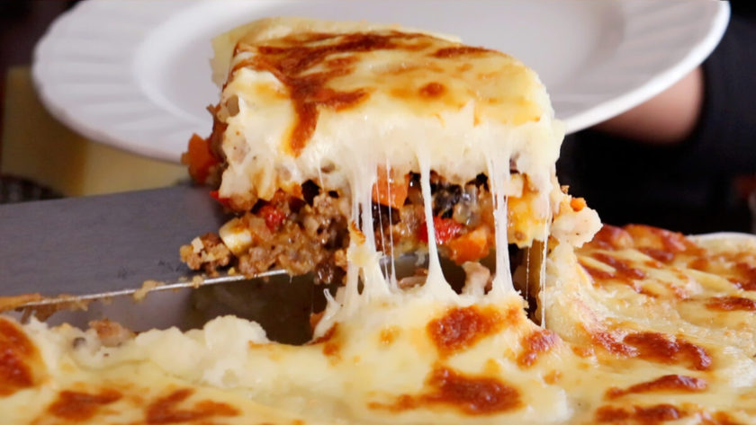

Pastel De Papas

Descripción
La receta es muy sencilla de hacer y no demanda demasiado tiempo en preparación, pero sobre todo es un plato exquisito y bien Argentino
Ingredientes
- cebolla
- morron
- papas
- carne picada
- condimentos varios
Lospasosa seguir son los siguientes:
- Primero cortamos cebolla y morron en cubos
- Rehogamos esto en una sartén con aceite de oliva
- Añadimos sal pimienta y condimentos a gustos
- Luego añadimos la carne picada
- Cocinamos y separamos el picadillo
- Por otro lado hacemos un puré de papas
- Una vez listo hacemos una capa de puré en una fuente alta apta horno
- Agregamos el picadillo previo
- Añadimos queso cremoso
- Finalizamos con la ultima capa de puré
- Añadimos queso rallado a la superficie
- Cocinamos por 45 minutos aproximadamente
- Disfrutamos